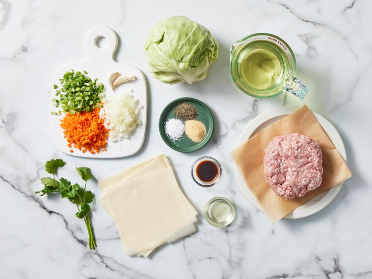
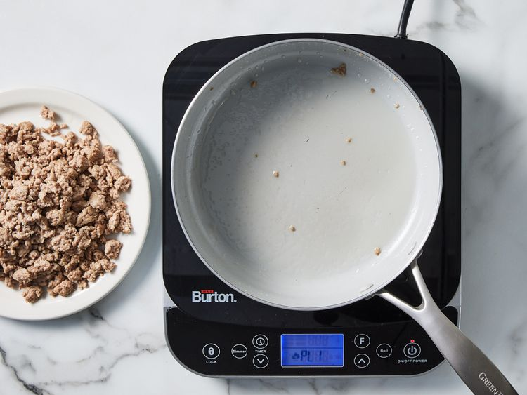
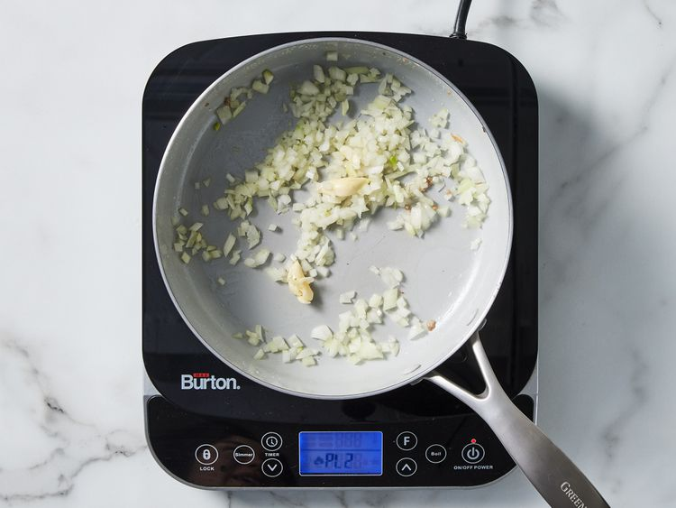
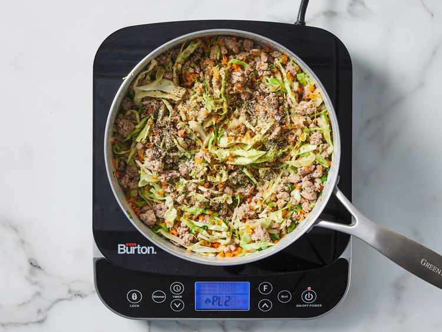
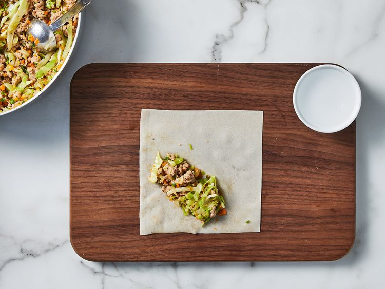
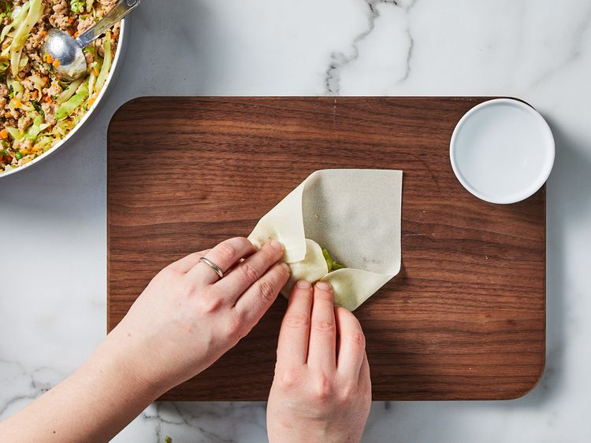
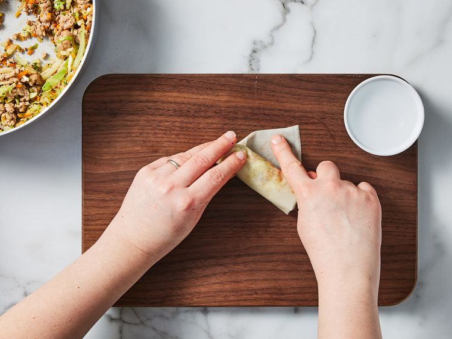
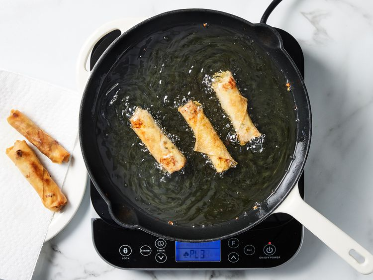

Photo by Dotdash Meridith Food Studios.
This is a Traditional Filipino Lumpia, or fried spring rolls recipe. They're made with paper-thin lumpia wrappers and filled with a savory mixture of ground pork, cabbage, and other vegetables. Serve lumpia as a side dish or appetizer with a sweet chili dipping sauce.
Step 1
Gather all ingredients.
Step 2
Heat 1 tablespoon vegetable oil in a wok or large skillet over high heat.
Add pork; cook and stir until crumbly and no longer pink, 5 to 7 minutes. Remove pork from the pan and set aside. Drain grease from the pan, leaving just a thin coating.
Step 3
Add onion and garlic to the pan; cook and stir until fragrant, about 2 minutes.
Step 4
Stir in cooked pork, carrots, green onions, cabbage, and cilantro. Season with pepper, salt, garlic powder, and soy sauce. Remove from the heat, and set aside until cool enough to handle, about 5 minutes.
Step 5
To assemble lumpia: Place 3 heaping tablespoons of filling diagonally near one corner of a lumpia wrapper, leaving a 1 ½ inch space at both ends.
Step 6
Fold the side along the length of the filling over the filling, tuck in both ends, and roll neatly and tightly to close.
Step 7
Moisten the other side of the wrapper with water to seal the edge. Transfer to a plate and cover with plastic wrap to retain moisture. Repeat to assemble remaining lumpia.
Step 8
Heat 1/2 inch vegetable oil in a heavy skillet over medium heat for 5 minutes. After that, slide 3 to 4 lumpia into the hot oil, making sure the seams are facing down. Fry, turning occasionally, until all sides are golden brown, 1 to 2 minutes. Transfer to a paper towel-lined plate to drain. Repeat to fry remaining lumpia.
Step 9
That's it. Serve immediately and enjoy!